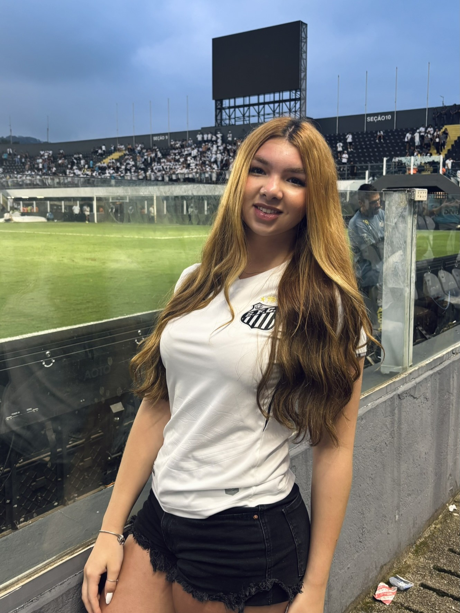
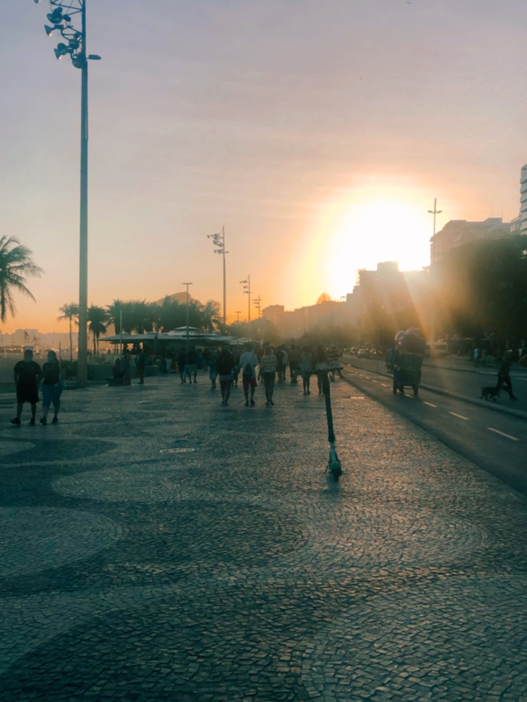
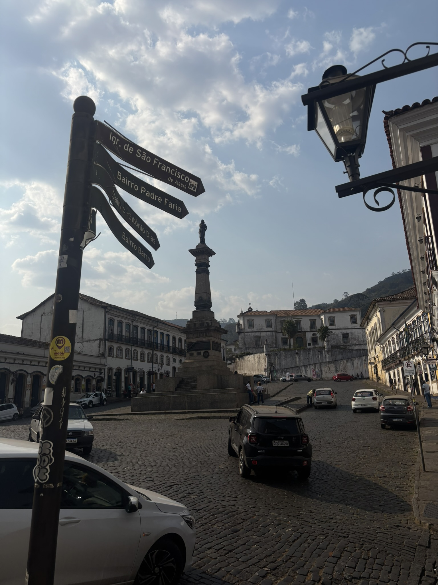
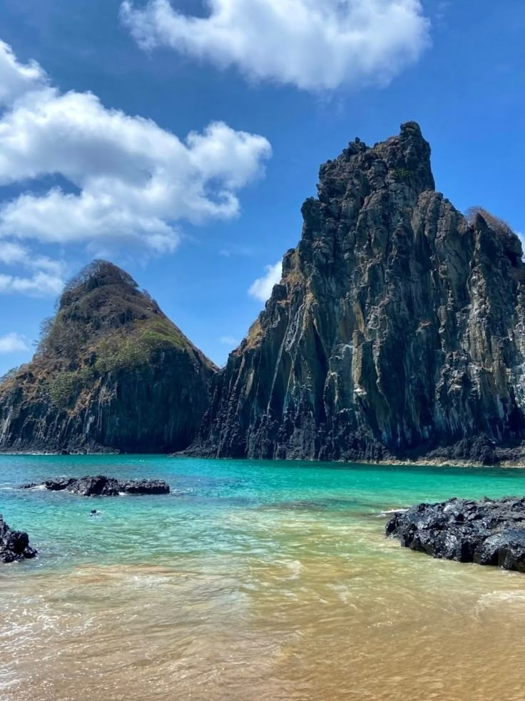
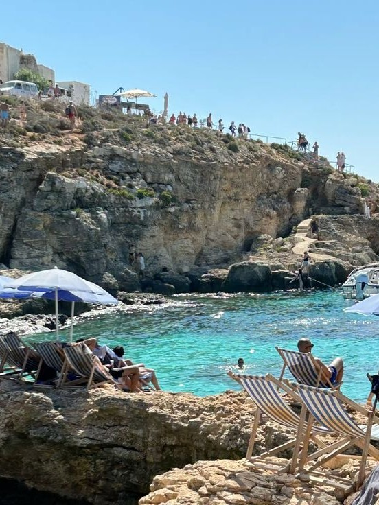

Yasmin Holando

Tenho 16 anos, nasci em 22/08/2009, em São Paulo, SP. Estudo na Germinare TECH do Instituto J&300F. Meu interesse em programação começou com o meu pai, que é desenvolvedor de sistemas. Mas meu contato com a área foi somente no Germinare, e desde então fico cada dia mais interessada. Trabalho na PicPay como desenvolvedora Front-End.

Curiosidades
- Meu time é o Santos Futebol Clube.
- Sempre tive muitos animais e adestrava eles por hobby.
- Eu amo mudanças.
Lugares que já conheci
 Paraty
Paraty- Rio de Janeiro
- Ouro Preto
Lugares que quero conhecer
- Fernando de Noronha
- Grécia
- Malta
-
 Islândia
Islândia